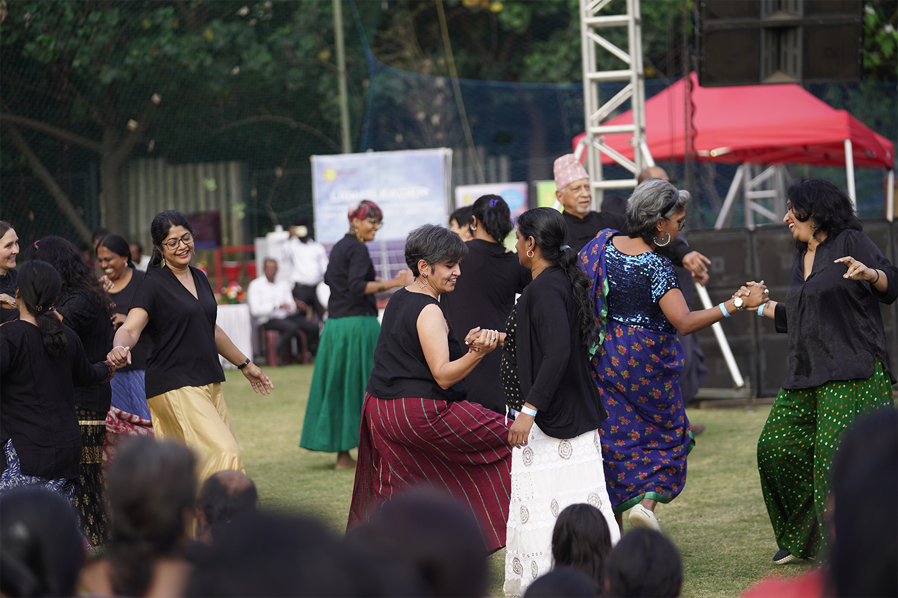

Raag Malhār
From a Carnatic vocalist who teaches over video calls in the evenings, to a saxophonist happy to lend his horn for a weekend gig, this is who makes music and dance happen at Malhar, gathered from each community's own directory.

Compiled from the Music & Dance Directory kept by each of Malhar's eight communities: Mosaic, Motif, Terraces, Footprints, Patterns, Resonance, Medley and Orchard. It's only as complete as what's been shared. Some communities have a longer list simply because more neighbours have added their names. Kept by Arvind Diwakar, Medley.
Find a teacher
Nine residents already teach from home, some in person, one entirely online. Reach out directly.
Not neighbours themselves, but each has students inside the community.
Arvind shows how a bamboo flute comes together
Eight small ensembles
Each community has its own character: Resonance is a house of vocalists, Orchard leans toward dance, Medley is the one to visit for an instrument. Find the one nearest you.
Browse everyone
Filter by what they do, where they live, or search a name.
Three to meet
Giridhar, the one-man studio
The only resident in the whole directory listed under recording. Giridhar records and posts music on YouTube from Motif. If a performance needs capturing properly, he's the one to ask.
Chinmayee plays and sings, same breath
Violin in one hand, bhajans and Carnatic vocals in the other. Chinmayee is one of only a few residents in the directory listed under both an instrument and a voice.
Meenakshi dances two classical languages
Bharatanatyam and Odissi, side by side in the same dancer. Two classical vocabularies that most people spend a lifetime choosing between.
Gear you can borrow
Not much listed yet, but it's a start.